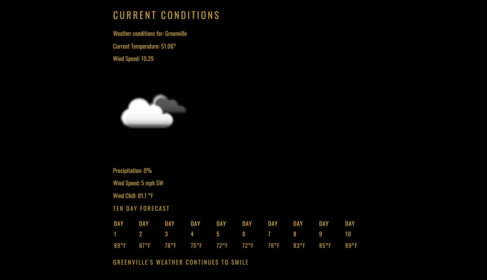
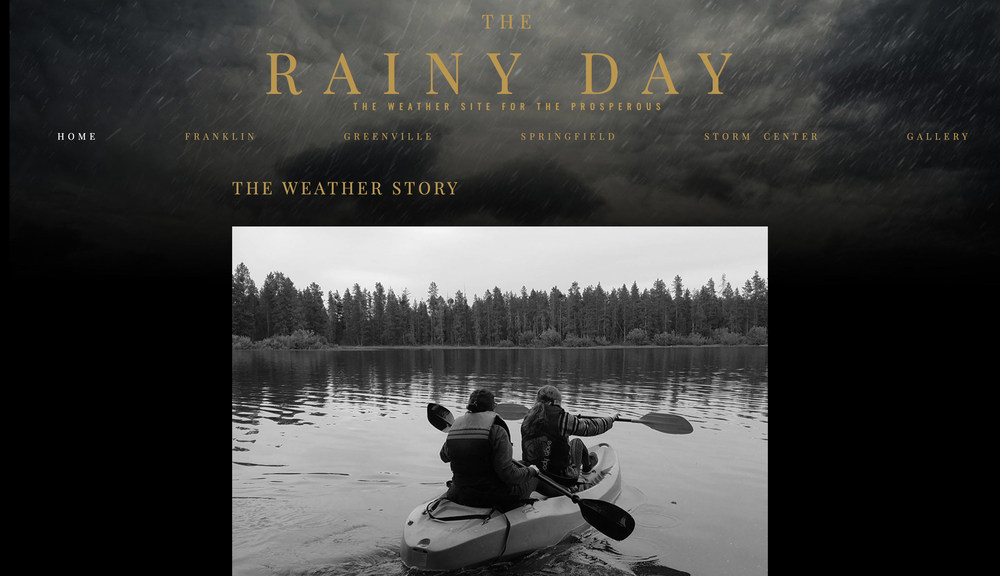
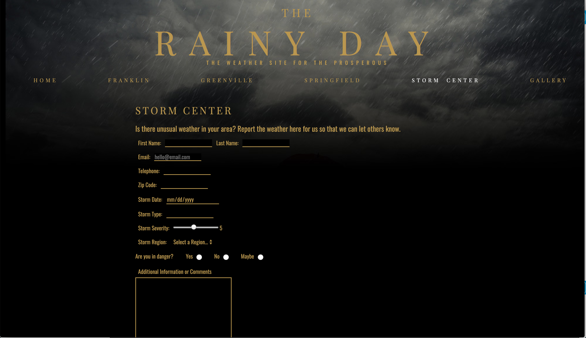

here's some of my stuff.
Web Design & Development

The Rainy Day: A weather site
The Rainy Day is a weather website created for learning purposes. The target audience was wealthy travelers. I designed the look of the site after that audience. The weather information is accurate and has been implemented using JSON. link.



User Testing
The site consists of 6 full pages and includes a gallery, form, tables and other features. The user testing I performed for this site was particularly helpful in navigation and wayfinding.